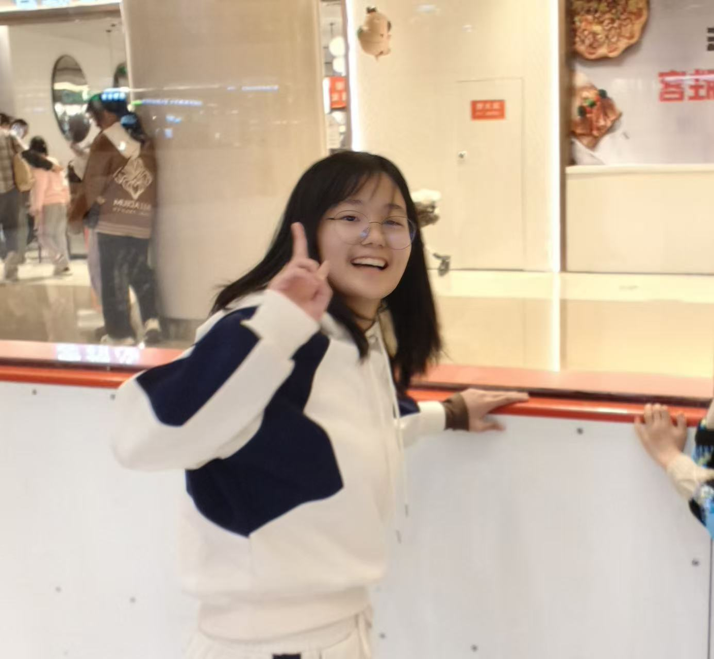

J’ai 20 ans et je suis spécialisée en finance.Je suis étudiante chinoise en échange à KEDGE Business School.J'aime lire, écrire et découvrir de nouvelles façons de voir le monde.J'adore aussi shipper des couples.Bienvenue sur mon premier site !
Découvrir mes lecturesLa littérature occupe une place importante dans ma vie.J'aime observer comment une phrase peut rendre une sensation précise.J'aime particulièrement les livres de Xiao Hong, une écrivaine chinoise.Son écriture a la fraîcheur d'une fleur de concombre.J'adore cette sensation.Pour moi, écrire, c'est comme laisser une liane pousser doucement pour venir effleurer cette fleur.
Le Champ de la vie et de la mortMoi, j'adore trop shipper des couples. L'amour pur entre un homme et une femme, j'aime trop ça.En ce moment, je regarde Kiss that Kills, un drama japonais.Le héros est un gigolo et l'héroïne est une vraie asociale. Franchement, je vous recommande trop ce couple !
Kiss that KillsJ'aime bien les trucs nouveaux.J'aime la littérature, et il y a aussi une autre raison : en fait, dans la littérature, on peut voir les choses sous différents angles.Près de la station du campus KEDGE de Marseille, il y a un arbre.Quand le soleil tape et qu'il y a du vent, ça scintille,on dirait un papillon vert qui n'a pas encore pris son envol.Pour moi, c'est ça, la nouveauté.Du coup, j'aime créer, j'aime la nature, j'aime apprendre,ça me permet de découvrir plus de choses.